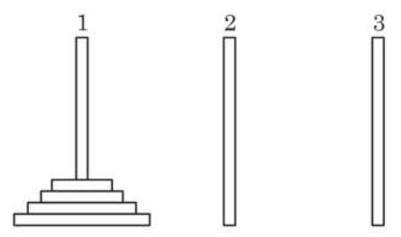
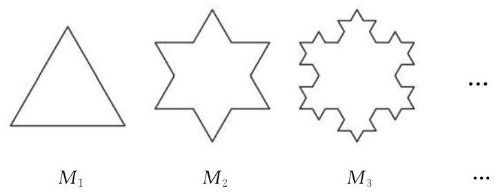

- 等差数列:设 为正整数，若数列 满足 ，则 为等差数列； 等差数列 的通项公式: ；
等差数列 的前 项和公式: 或 .
- 等比数列:设 为正整数，若数列 满足 ，则 为等比数列； 等比数列 的通项公式: ；
等比数列 的前 项和公式: 或 .
-
数列:按照一定顺序排列的一列数称为数列.
-
用数学归纳法证明命题的一般步骤是:
(1)证明当 取第一个值 时，命题成立；
(2)假设当 时命题成立，证明当 时命题也成立.
复习题
A 组
复习题A · 1
- 填空题:
(1)已知数列 是等差数列，下面的数列中必为等差数列的序号是___.
① ② ③ ④
(2)已知数列 是等比数列，下面的数列中必为等比数列的序号是___.
① ② ③ ④
答案与解析收起 / 展开
复习题A · 2
- 选择题:
(1)我国古代数学名著《算法统宗》中有如下问题: “远望巍巍塔七层，红光点点倍加增，共灯三百八十一，请问尖头几盏灯?”意思是:一座 7 层塔共挂了 381 盏灯，且相邻两层中的下一层灯的盖数是上一层灯的盖数的 2 倍, 则塔的顶层灯的盖数是 ( )
A. 1; B. 3; C. 5; D. 9.
(2)已知数列 ，若 ，且 ( 为正整数)，则数列的第 35 项为 ( )
A. 6 ; B. -3 ; C. -12; D. -6.
答案与解析收起 / 展开
复习题A · 3
答案与解析收起 / 展开
复习题A · 4
- 已知存在常数 ,使得等差数列 的前 项和为 . 求该数列 的通项公式.
答案与解析收起 / 展开
复习题A · 5
- 设 为等差数列 的前 项和,求证: 数列 是等差数列.
答案与解析收起 / 展开
- 提示: 设数列 的公差为 ,利用 结合定义法证明.
复习题A · 6
答案与解析收起 / 展开
复习题A · 7
- 已知等差数列 的前 项和为 ,且满足 . 这个数列的前多少项和最大? 并求此最大值.
答案与解析收起 / 展开
- 这个数列的前 15 项和最大, 最大值为 225.
复习题A · 8
- 在 2 与 9 之间插入两个数, 使前三个数成等差数列, 后三个数成等比数列. 试写出这个数列.
答案与解析收起 / 展开
复习题A · 9
- 已知数列 是等比数列,且 成等差数列. 求数列 的公比.
答案与解析收起 / 展开
复习题A · 10
答案与解析收起 / 展开
复习题A · 11
- (1) 依次计算下列各式的值:
(2)根据(1)中的计算结果，猜想
的表达式, 并用数学归纳法证明相应的结论.
答案与解析收起 / 展开
B 组
复习题B · 1
- 选择题:
(1)已知 和 均为等差数列，而 为等比数列，且 ， 则 的值等于 ( )
A. 1 ; B. 2; C. 3; D. 4.
(2)已知两个等差数列 和 的前 项和分别为 和 ，且满足 ， 则使得 为整数的正整数 的个数为 ( )
A. 2 ; B. 3; C. 4; D. 5.
答案与解析收起 / 展开
复习题B · 2
- 已知 是等比数列 的前 项和,且 成等差数列. 求证: , 成等差数列.
答案与解析收起 / 展开
- 提示: 设公比为 ,由 ,得 ,利用等差中项定义证明.
复习题B · 3
- 已知在等差数列 中, .
(1)求证: 对一切小于 19 的正整数 都成立;
(2)类比上述性质，在等比数列 中，若 ，可以得到什么结论？
答案与解析收起 / 展开
- 提示: (1) 当 时, . 因为 ,所以 ,两边同加 ,得 ,得证.
当 时, . 同理可证.
(2)在等比数列 中,若 ,则 对于一切小于 17 的正整数 都成立.
复习题B · 4
- 已知数列 的各项均为正数， ，且 .
(1)求证:数列 是等差数列；
(2)若数列 满足 求数列 中的最大项与最小项.
答案与解析收起 / 展开
- 提示: (1) ,把递推式两边同时取倒数,有 ,所以 是以 为首项、以 2 为公差的等差数列.
(2) 因此数列 的最大项为 ,最小项为 .
复习题B · 5
- 已知数列 的前 项和为 ,且 . 求证: 数列 为等差数列.
答案与解析收起 / 展开
- 提示: 由 ,知 ,
所以 ,①
②
②-①并整理,得 ,即 .
所以数列 是等差数列.
复习题B · 6
答案与解析收起 / 展开
复习题B · 7
- 是否存在常数 ,使等式
对任意正整数 都成立? 证明你的结论.
答案与解析收起 / 展开
- 提示: 假设存在常数 ,使等式 对任意正整数 都成立.
当 时,等式均应成立,可解得 .
由此猜想 对任意正整数 都成立. 数学归纳法证明略.
拓展与思考
拓展与思考 · 1
- 如图所示, 有三根直杆和套在一根直杆上的若干金属片, 把金属片按下列规则从一根直杆上全部移到另一根直杆上:
① 每次只移动 1 个金属片;
② 较大的金属片不能放在较小的金属片上面.
试推测: 把 个金属片从 1 号直杆移到 3 号直杆,最少需要移动多少次?

(第 1 题)
答案与解析收起 / 展开
- 提示: 设将第 个金属片从 1 号直杆移到 3 号直杆需移动的最少次数记为 . 要先说明数列 满足递推关系: .
据此得到数列 的通项公式为 ,因此最少需要移动 次.
拓展与思考 · 2
- 如图, 将一个边长为 1 的正三角形的每条边三等分, 以中间一段为边向外作正三角形, 并擦去中间这一段, 如此继续下去得到的曲线称为科克雪花曲线. 将下面的图形依次记作 .
(1)求 的周长;
(2)求 的面积；
(3)当 时,科克雪花曲线所围成的图形是周长无限增大而面积却有极限的图形吗? 若是, 请求出其面积的极限; 若不是, 请说明理由.

(第 2 题)
答案与解析收起 / 展开
- (1)设 的周长为 ,其通项公式为 .
(2)设 的面积为 ,可证明 .
(3)当 无限增大时, 也随之无限增大,而 .
因此, 科克雪花曲线所围成的图形是周长无限增大而面积却有极限的图形, 且面积的极限为 .